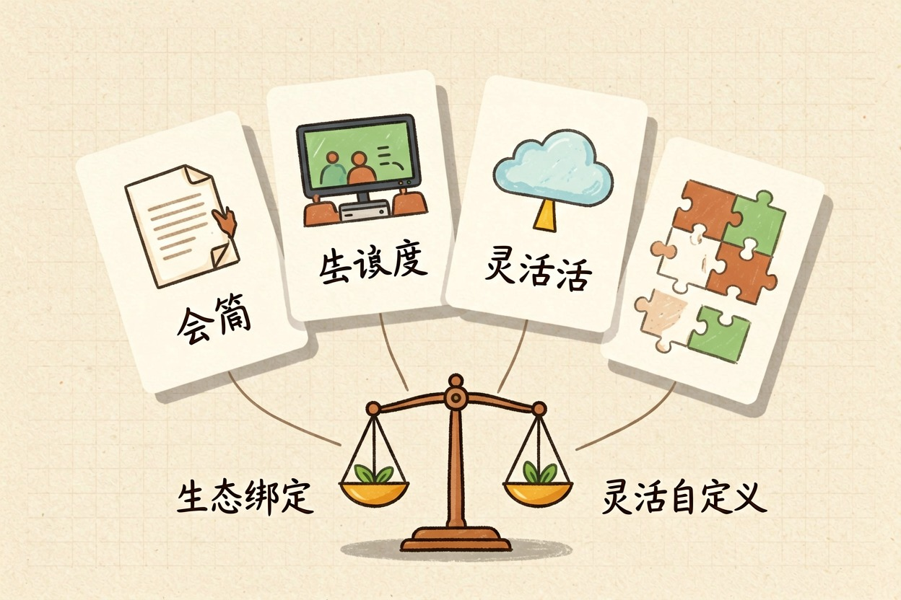
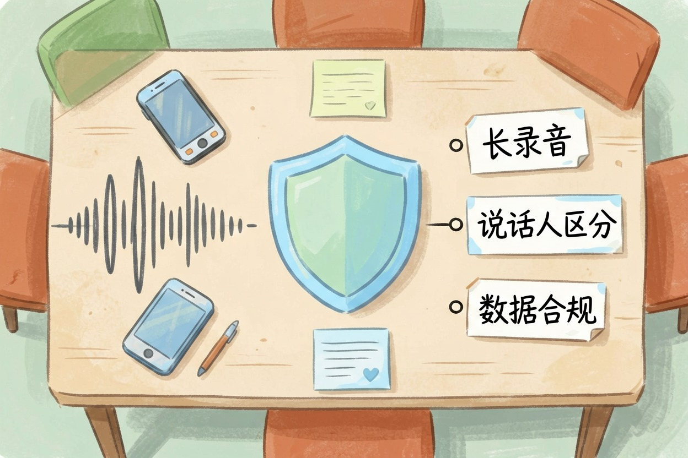
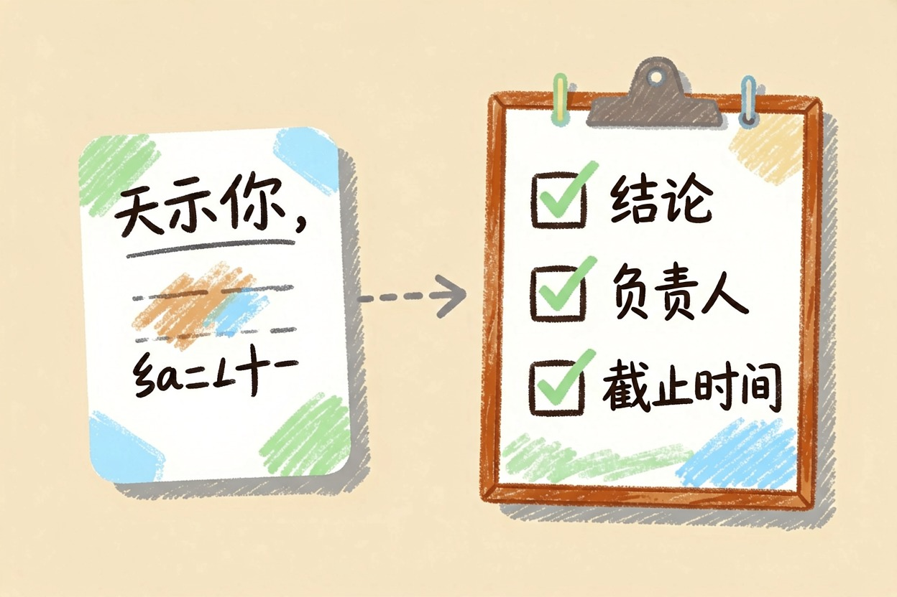

AI 会议纪要工具对比：4 款中文适用场景
开会录音变成一份能发出去的纪要，中间隔着两层：先把话转成字，再把字变成结论。
AI 会议纪要工具其实分两层
先把概念理顺。AI 会议纪要工具不是一个东西，是两层能力叠在一起。第一层是转写，把声音变成文字，考验识别率、口音适配、说话人区分。第二层是纪要生成，把几千字逐字稿压成结论、决议和待办，考验归纳能力。
转写准不等于纪要好：有的工具逐字稿几乎不出错，纪要却是流水账；有的转写一般，待办却提得很准。
行政岗的周姐踩过这个坑。她挑了一款转写准确率吹得最狠的工具，用了两周才发现还得自己从头读一遍逐字稿。转写省下的时间，全花在归纳上了。
四款主流选择怎么比

| 维度 | 飞书妙记 | 腾讯会议 AI 小助手 | 通义听悟 | 通用 AI + 录音转写 |
|---|---|---|---|---|
| 中文识别 | 强 | 强 | 强 | 看所选转写工具 |
| 说话人区分 | 有 | 有 | 有 | 多数要手动标 |
| 纪要结构 | 清楚 | 与会议流程绑定 | 分段加摘要 | 完全自定义 |
| 待办提取 | 有 | 有 | 有 | 靠提示词，最灵活 |
| 免费额度 | 有上限 | 有上限 | 有上限 | 看两端各自额度 |
| 导出与协作 | 与文档打通 | 与会议记录打通 | 可导出文稿 | 手动搬运 |
飞书妙记。 公司已经在用飞书就选它，纪要直接躺进文档和任务里。为一个纪要功能换整套办公套件不值。
腾讯会议 AI 小助手。 会本来就开在腾讯会议上，零切换成本。线下会和外部录音它接不住。
通义听悟。 不绑办公套件，长录音和音视频文件都能传。想摸一摸同门的对话能力，看通义千问的免费额度与场景。
通用 AI 加录音转写。 最灵活，纪要模板按你的格式来。缺点是文件要自己搬两次。
四家免费额度都有上限，掏钱前去各自官网定价页确认。
按会议场景怎么选

内部周会。 用公司已经在用的那套，价值在待办能不能落到人头上，不在转写多准。
客户访谈。 挑支持长录音和外部文件上传的，访谈往往一小时起步，还要反复回听。
线下录音。 手机录完再上传，通义听悟更合适。收音距离是识别率第一杀手，录之前把手机挪到桌子中间。
跨部门评审。 说话人区分是刚需，谁提的意见、谁认领的任务必须对上号。
三个共同短板与规避

专有名词全军覆没。 产品代号、内部黑话、人名几乎必错。会前把术语表贴进工具的热词栏；没这个功能，就在生成纪要时贴进提示词。
口音和抢话。 两个人同时说，转写会把句子搅在一起。主持人开场提一句「一次一个人说」，比换工具管用。
录音授权与数据合规。 这条在国内职场最容易被忽略。开录前先过三道关：告知，有客户或外部方在场先征得同意并留痕；归口，涉密音频别传进个人账号，走公司统一工具；本地优先，涉及商业机密、未公开财务的会尽量离线转写，文件不出内网最稳。选工具时顺手看一眼数据存在哪。做销售的老赵吃过亏，把客户访谈录音传进个人账号做纪要，被法务提醒后花半天逐条删除。
想更省事：把纪要接进待办
纪要的价值不在存档，在有人接活。把这段贴给你的 AI 助手，配合逐字稿用：需要完整流程模板的，看从录音到待办的完整做法。
下面是一段会议逐字稿。请按这个格式输出：
1. 结论（不超过 3 条，每条一句话）
2. 决议事项：内容 | 负责人 | 截止时间
3. 待办清单：只列有明确负责人的，其余单独放「待认领」
4. 争议与未决问题
5. 术语表：把你不确定的名词列出来让我确认
逐字稿里没提到的信息不要补充，负责人不明确就写「未指派」。输出完直接贴进任务工具。想把纪要顺手变成周报，看用 AI 写周报的完整做法；想再找几个省事的，免费 AI 工具清单里有。
功能与免费额度更新频繁，实际以官网当天说明为准。
AI 会议纪要工具挑一款够用的就行，别为了追准确率把流程搞复杂：先看你的会开在哪，再选工具，最后才调提示词。
本文信息核对于 2026-08-05。AI 产品的价格、免费额度与功能变动频繁，实际以各工具官网当前说明为准。